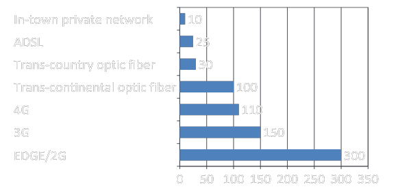
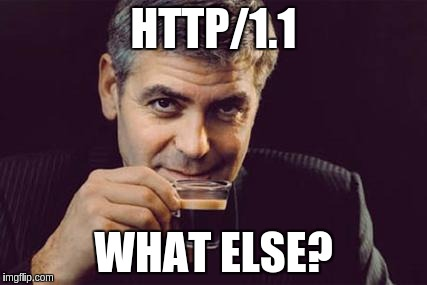
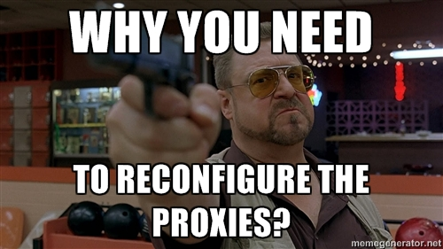
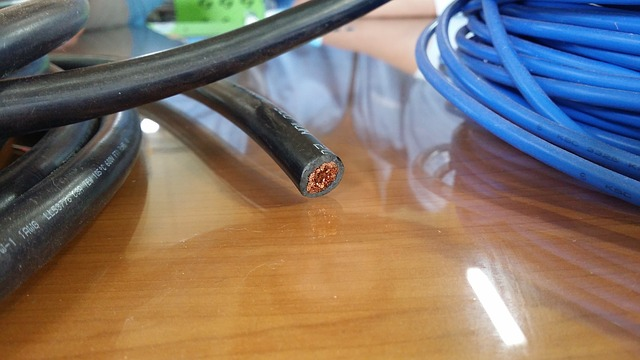
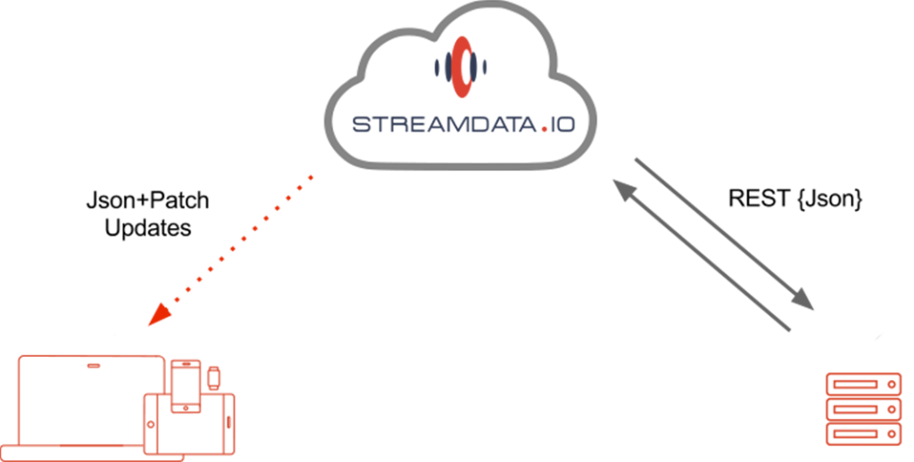

Réactivité et Interactivité des UI :
que faire et comment ?

Real-time UX... i$ Rea£-time Mon€¥
Amazon found every 100 milliseconds of apps latency cost them 1% in sales.
Google found an extra 0.5 seconds in search page generation time dropped traffic by 20%
Round Trip Delays (ping time)
In ADSL, first useful piece of data in 60ms (HTTPS) In 4G / LTE, first useful piece of data in 300 ms (450 ms in 3G)

Netflix / Google / Twitter
Dynamic data for your UI
- Stock prices & betting odds
- Social networks info / status
- Search options / words
- News
- Stock of services /products
- Prices
- Dashboards
- Collaborative works/inputs
- Online games
- IoT
Which ingredients for a real-time UX?
Solutions for dynamic data
- Long polling
- WebSockets
- Server-Sent Events
Long Polling
Don't use it anymore
WebSockets
- Push techno
- W3C
- 2008
Server-Sent Events
- Push techno
- W3C
- 2006
WebSockets
Server-Sent Events

WebSockets
- TCP
- low-level protocol
- HTTP upgrade handshake
GET /chat HTTP/1.1
Host: example.com:8000
Upgrade: websocket
Connection: Upgrade
Sec-WebSocket-Key: dGhlIHNhbXBsZSBub25jZQ==
Sec-WebSocket-Version: 13
Server-Sent Events

GET /stream HTTP/1.1 1
Host: example.com
Accept: text/event-stream
WebSockets
proxies and load balancers reconfiguration

Server-Sent Events
No need to reconfigure!
(it's HTTP)
WebSockets
Server-Sent Events
WebSockets
binary + text
native support browsers
Server-Sent Events
text
| API | |||||
|---|---|---|---|---|---|
| SSE | 6.0 | 6.0 | not supported |
5.0 | 11.5 |
… but polyfills

WebSockets
var websocket =
new WebSocket('ws://mywebsocketserver/echo');
websocket.onopen = function () {
...
};
websocket.onmessage = function (e) {
...
};
websocket.onerror = function (error) {
...
};
Server-Sent Events
var eventSource =
new EventSource('http://mysseserver/echo');
eventSource.onopen = function () {
...
};
eventSource.onmessage = function (e) {
...
};
eventSource.onerror = function (error) {
...
};
eventSource.addEventListener('foo', function(e) {
...
}, false);
"Perfs"
Use case: Préchargement de 500 Tweets sur une page web (nginx configuré en tant que proxy)
| WebSockets | 16s | 8s | 8s |
| SSE | 7s | 5s | 6s |
| diff | x2.2 | x1.6 | x13 |
Source http://matthiasnehlsen.com/blog/2013/05/01/server-sent-events-vs-websockets/
What if...?
... I have just a REST API?
Which ingredients for a real-time UX?
Libraries / Frameworks UI friendly
- property bindings (Android, ObjectiveC, Swift, etc.)
- Ionic / AngularJS
- EmberJS
- RiotJS
- D3.js
- Epoch.js
- ...
Demos
Conclusion
- 0.5s is the latency objective
- The world is more and more dynamic and we've got the tools
- Be ready to animate data, become streamers!
“The more others invest in amazing UI, the more yours seems louzy”Einstein « Relativity concepts applied to UI », OpenRoadMedia, 1937
Thank you!
References
JS Polyfills:
References
WebSockets / SSE: